Archery
Archery
Cranked to Eleven

Bullshit
Bullshit
To Its Core

The Part of a Class.
There are lots of skills in the Braver skill tree that support and enhance Bullet Bow. Check the skill tree simulator, look at the one in the game, or take a quick scan at the edited image below. At level 100, the maximum cap PSO2 has, you should get 114 skill points to spend. Regardless of the server you are playing, you may not need to use every single point.
Bow Braver will, of course, spend most of the skill points on bow skills. Then, we follow up with a few katana skills. In addition to that, some of the other skills are needed for Bow Braver to function properly.
|
Rapid Shoot [Rapid Fire]
For 60 seconds, bullet bow Normal Attack fires three shots instead of one, in exchange for lower damage per shot and slower interval. The skill has 110 seconds cooldown. |
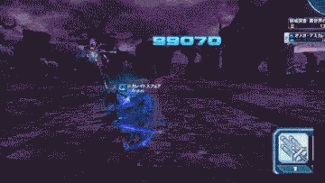 |
This is an “Active Skill”. Put it on your subpalette and activate it, just like how you use skills in other MMO games.
It serves two purposes: faster PP Recovery and temporary damage boost. Firing three arrows means that you gain triple the amount of PP back and learning extra skill related to Rapid Shoot grants you a massive amount of range damage increase.
Remember to use it when it is ready. Otherwise, hold if necessary in certain situations. Rapid Shoot always has around one second activation animation, so you never get the full duration regardless of reasons. If you are flinched during it, you will lose the skill effect. However, switching to any weapons does not deactivate the skill.
The following skills further enhance Rapid Shoot.
Charge Shoot [Charged Shot]: With Bullet Bow equipped, your charged normal attack deals more damage and its projectile travels faster. It doesn’t turn your arrows into Assault Rifle’s bullet, but hitting the enemies quicker means the damage and PP recovery occurs much quicker.
Bullet Bow Charge Bonus [Bow Charge Bonus]: (MAIN CLASS ONLY) When equipped with Bullet Bow, your chargeable PA has reduced charge time and PP consumption. It reduces the PP Consumption of those PA by 5, applying AFTER any percentage reduction from other sources. Besides, charge time reduction is noticeable the more you play with the weapon.
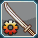
Katana Gear [Katana Focus]: Learning the skill grants “Gear/Focus Gauge”, accumulating the Gear/Focus resource as you attack with the katana. As the resource increases, the higher the damage you do with it. Gathered enough, a successful Counter releases it, adding extra effects.
As stated above, the skill has two mechanics that you should know.
|
Level 1 grants 35% Damage Buff. |
Level 2 grants 38% Damage Buff. |
Level 3 and above grants 40% Damage Buff. |
You always start a quest with max level of Gear/Focus. However, there's an unresolved bug that resets the gauge when performing multi-block matching for a quest. Re-matching should fix the problem though. Adding to that, Gear/Focus accumulation is a lot faster if your katana attacks hit multiple targets.
By default, the released state of Katana Gear persists for 15 seconds. However, accumulate Gear value further past
level 3 and filling the small bars will extend the duration a second per bar, up to 20 seconds
().
It is impossible to maintain the state indefinitely, depleting as you use the weapon.
Note that switching to other weapons during the release state or dying will revert the state back to normal, while resetting the entire bar. However, the normal state remains the same regardless of the weapon you use. To prevent depletion during the released state, you must learn the skill called “Braver Combination” first and equip a bow after getting level 85.
Katana Gear also has additional skills that further enhance katana gameplay.
 Katana Gear Boost [Katana Focus Boost]: (MAIN CLASS ONLY) Increase Gear Accumulation and PP Recovery (Attack PP Recovery and Natural PP Recovery) only when equipped with a katana, regardless of Katana Gear/Focus state.
Katana Gear Boost [Katana Focus Boost]: (MAIN CLASS ONLY) Increase Gear Accumulation and PP Recovery (Attack PP Recovery and Natural PP Recovery) only when equipped with a katana, regardless of Katana Gear/Focus state.|
Katana Combat:
For 20 seconds, katana attacks are greatly enhanced. Pressing the skill again to perform another attack to all nearby enemies. Only usable while equipped with Katana. The skill has 180 seconds cooldown. |
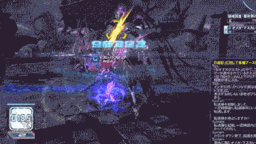 |
This is an “Active Skill”. Put it on your subpalette and activate it, just like how you use skills in other MMO games. It allows you to chase enemies, also aerial ones, and move through them while giving Guard Frames on activation. At max level, the cooldown is reduced to 90 seconds. The circle around you indicates the timer and turns red when it reaches 3 seconds. The effect also ends immediately if you switch to any weapon but katana.
While active, it accumulates hits you’ve made with Katana Attacks, up to 50 hits for maximum damage of Combat Finish. It has a two-part attack. First is a short-ranged, low-damage slash that recovers 5 PP. The second is a wide slash toward all nearby enemies, recovering 50 PP per enemy hit, and granting a JA circle afterward. PP Recovered from the attack is affected by any Attack PP Recovery bonus.
Kanata Combat has a couple more skills to enhance its effectiveness.
Braver has access to 2 Stances intended to be used based on the current situation.
| Average [Basic] Stance grants you permanent damage increase regardless of conditions. The stance becomes your passive skill; always active until you hit Weak Stance. | Weak [Precision] Stance grants a huge damage bonus only when you are hitting the enemy’s weak point (area with site multiplier value higher than 1.15x). It is an active skill that you can toggle to enable it instead of Average Stance. |
Both stances also have three more of the same skills ( and ) to boost their effectiveness.
We ignore the Stance skills during early levels, as Rapid Shoot and Charge Bonus are more vital to bullet bow. Stances become relevant after reaching VH difficulties or higher. The enemies are more resilient, and your attack values from gear can use additional multipliers.
At the current state of the game, regardless of the server, you should go DUAL STANCES. The reason is simple: the opportunity cost while using those stances when fighting enemies with various weak points.
Average Stance keeps your damage multiplier to be at least 1.15x, while Weak Stance will sky-rocket your damage if you manage to hit the enemy weak points consistently. With newer enemies introduced now and then, along with their annoying mechanics, going a single stance may not be enough.
Toggling between both stances requires you to not be locked in any attacks or animation. You can potentially lose a lot of damage by spending too much time switching between the stances.
“But, what actually counts as weak-points?” Theory wise, you can check JP wiki for that. But, in general and more mundane ways...
Apart from above, you can do trial and error with Stances. If you deal less damage than you usually do with Weak Stance, that location on the enemy should not be a weak point. Otherwise, try watching different Bow Braver gameplay videos to see how other players approach it, or hit up the JP sWiki for the exact numbers on site multipliers.
Rare Mastery Braver Arms Enthusiast: Braver]: (MAIN CLASS ONLY) Gain damage bonus when equipped with a weapon of 10* rarity or higher. It’s pretty straightforward: use better weapons, and you deal more damage.
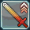 Attack Advance [Enhanced Attack]: Increase the power of your normal attack. Other attack types are unaffected. It applies to all types of weapons.
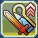 High-Level Bonus Br: Gain a bonus to all damage dealt. You need to be level 80 or higher in order to learn it.
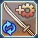 Braver Combination: (MAIN CLASS ONLY) Grants +50% Critical Strike Chance while equipped with Bullet Bow or Katana. Switching to the bow now maintains the current state of Katana Gear. Furthermore, the bow also receives additional Critical Strike Chance (+50%) during Katana Gear release state.
No one has expected SEGA to keep the old version of this skill. After hitting level 85, while other classes are struggling to cap their Critical Strike Chance, Braver instantly caps crit (100%) on releasing Katana Gear. Well, if you choose to go this route.
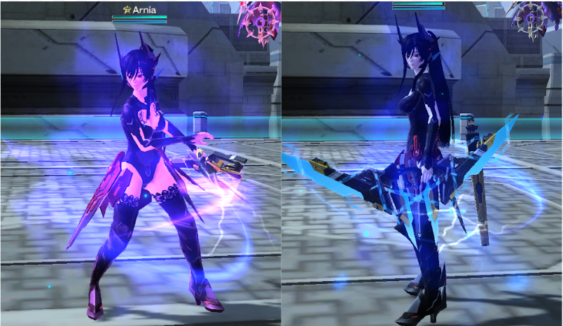
We will be dealing the maximum amount of damage while being able to fully abuse Critical Strike Damage SSA. Besides, the flame color changes from purple to blue when equipped with a bow! It’s a free cosmetic by the way.
Just Reversal Cover [Perfect Recovery Heal]: Recovers a portion of your HP when you perform Just Reversal. Regardless of situations, spending at least a single point in this skill can negate certain attacks from the enemy.
Step Advance [Advanced Dodge]: Extends the invincibility duration of Step. It does not affect the bullet bow's special move when using certain PA. Most players will invest just 3-4 points on this skill based on your subclass.
Quick Mate: Use mate items faster. It affects all “-mate” items in the game, which are Monomate, Dimate, and Trimate. The time it takes to drink for the healing is cut in half. To be precise, it’s ~62% faster.
Snatch Step [Sidestep Tackle]: Step now deals damage. You can’t cut grass with it. Slashing weapons and a rifle called “Spread Needle” can do so. Also, Snatch Step recovers PP. The amount recovered is affected by the Attack PP Recovery bonus from any sources.
 Braver MAG: Gives one point of S-ATK and R-ATK per one point of DEX on your MAG. The skill stacks on top of the other class skills, which are Phantom MAG and Bouncer MAG.
Braver MAG: Gives one point of S-ATK and R-ATK per one point of DEX on your MAG. The skill stacks on top of the other class skills, which are Phantom MAG and Bouncer MAG.
For the stats increase skills, you can max out 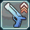 Shooting Up 1 [Ranged Power Up 1] if you want extra R-ATK for more damage. Attack stat from skill tree is added to your character’s base attack stat, affected by Shifta, so the net value becomes higher than the value shown. Leave Dexterity Up 1 & 2 as it is not worth your skill points. Also, we don’t take Striking Up 1 [Melee Power Up 1] by default, but things will change when you go Hybrid.
For the mobility/utility skills, they are
Step Jump,
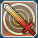First Arts JA Addition,
Air Reversal,
J Reversal JA Combo and
Next Jump,
You should learn it whenever possible. These skills increase your quality of life when it comes to combat maneuvers and moving around in general.
In the [EN Server], they are [Sidestep Jump, First Art Perfect Attack Addition, Air Reversal, Perfect Recovery and Attack Combo, and Double Jump]. Thanks, Microsoft translation team.
In order to minimize the possible mistakes that can happen when learing skills in the early levels, I recommend following the order below.
You can get 10 extra skill points from Azanami’s quests, so check in at her. Also, don’t forget to learn the five mobility skills at top since they are free.
|
Spend 3 points in Dexterity Up 1 to get access to the rest of the skills.
|
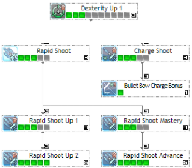 |
|
Spend 5 points in Attack Advance next to boost your Normal Attack.
|
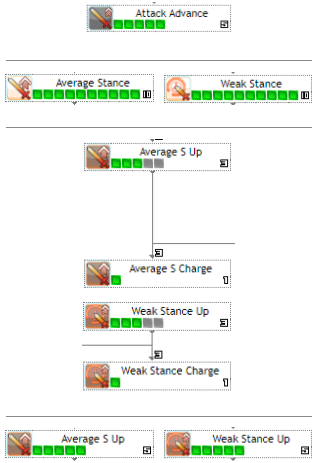 |
As a result, Bow Braver needs at least 63 skill points for the CORE skills. The skill tree and the link here shows what it looks like. You should get everything by level 50-60. Both servers should also have the same skill tree!
Now, what about the remaining skill points that you get after level 60? Go through the list below and see what you can do with it.
And yes, it is possible to use both weapons. Hate it or not, you are going to need the katana sooner or later.
Remember: leave Dexterity Up at 3 points. Don’t do anything about it. Don’t even think about the other Dex skills. Please don’t.
The following skill trees will be the most common forms of many, many, many, many variations that people would tell you. The class often requires 104-108 points to get everything we need, so feel free to adjust the tree as needed. Following the explanation above, it would look like these. Click on the image to go to the skill simulator and see if you want to change something.
For this version, we ignore most of the Katana skills. The decision on taking Snatch Step is on you because it can interfere with your Banishing Arrow from time to time. You have the freedom to spend the remaining points.
Also, one can remove a point from Quick Mate and opt for the left ring, then spend the last seven points to get Combat Escape. There are times that will find 20-seconds invincibility useful though.
The last 10 points are left for the player to decide. Feel free to put those points into whatever skills you need, so it works with your playstyle. Some common examples are:
As long as you can cap Critical Strike Chance without having to invest that much in Stance Critical, you should be able to take all weapon necessary skills and still have points left. It’s a different story if you want to take the stats increase ones, and the same concept even applies to BrRa and BrSu.
Powered by w3.css and the cursed soul of the guide writer UwU.